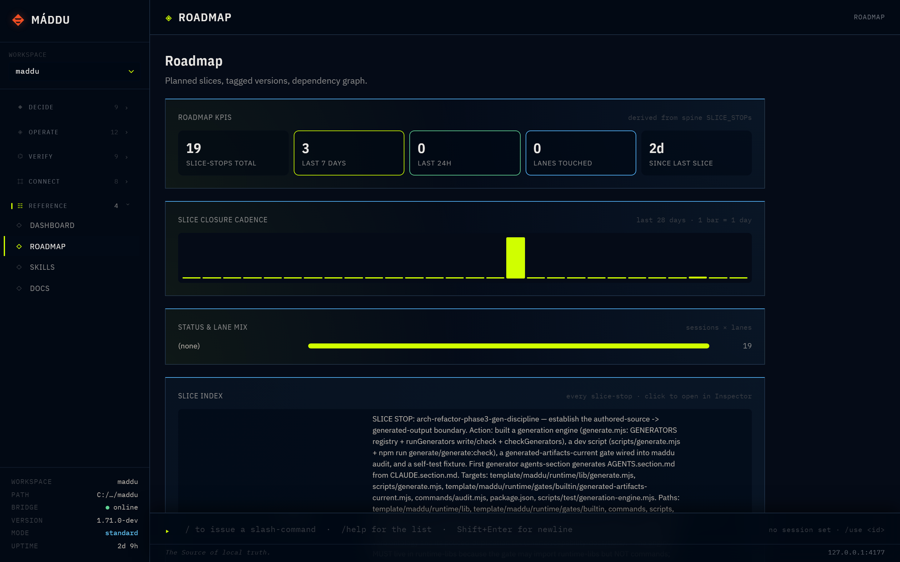

Local-first orchestration spine
Máddu is the local-first orchestration spine for AI coding agents. Point Claude Code, Codex, or any agent CLI at it — and every approval, session, and slice of work lands on one append-only log you can read, replay, and trust long after the agent is gone.

The problem
You've handed real work to AI agents — they claim lanes, request approvals, ship slices, hand off to each other. Then the context window closes, and the trail evaporates.
Buried in a chat log you can't grep, on a machine you're not on.
Scattered across SQLite files, vendor dashboards, and agent memory you can't inspect.
With most tools you can't prove it wasn't. You're trusting a black box.
The idea
Every approval, session boundary, lane claim, and slice of work is one line in one append-only log on your disk. Everything else is derived from it — and discarded on conflict.
Suddenly the hard questions get easy. Every state question reduces to tail, grep, or git log on a file you already own. No SQLite to crack open. No dashboard between you and the truth. The log replays deterministically on any machine — so the answer is the same everywhere, forever.
How it works
An append-only event log — the single source of truth. Every approval, session, lane claim, and slice is one line. Replays deterministically on any machine.
One Node process. Serves the cockpit over loopback, runs the gates, spawns agent workers with credentials handed in at spawn-time. Imports zero provider SDKs.
A read-only window onto the spine and its projections. Watch and replay what your agents did — in any browser, over loopback only.
Everything under .maddu/state/ is a projection: rebuildable from the spine, discarded on conflict. The spine always wins. There's no spine repair by design — corruption surfaces by name, file-and-line precise, and you decide remediation.
Why Máddu
catEvery approval, boundary, and slice-stop is one line in one file. Introspect with shell tools you already trust — no SQLite to crack, no log aggregator, no dashboard between you and the truth.
Delete .maddu/state/, rebuild from the spine on any machine, get the exact same ledger. Decisions live as real events — audit immutability is provable, not declared.
spine verify walks every segment — parseability, id-uniqueness, continuity, monotonicity, referential integrity, and a forward prev_hash chain that pinpoints the first altered line.
Switch context across five repos without booting five bridges. workspace add mounts each; /bridge/_all/* fans out reads. Each repo's spine stays its own source of truth.
Nothing enters long-term memory without a structured event saying so. SLICE_STOP feeds hindsight; learn distils corrections from past failed→succeeded calls. Both replay on rebuild.
SDK churn from Anthropic, OpenAI, or Google never reaches your orchestrator. Provider calls happen only inside workers; credentials stay device-bound and never traverse a remote service.
The 8+1 hard rules
maddu doctor checks them on every install and upgrade; maddu audit traces each one to the gate that enforces it. A repo that violates any of them is not a Máddu repo.
| # | Rule | What it prevents |
|---|---|---|
| 1 | Files-only state | SQLite corruption, opaque feature state, migration hazards |
| 2 | Append-only event spine (tamper-evident) | Mutable history, replay-divergence, silent rewrites |
| 3 | No hosted backends | Telemetry, vendor lock-in, "Máddu Cloud" |
| 4 | No broad dependencies | Supply-chain risk, transitive vulnerabilities |
| 5 | No provider SDKs in app code | Hidden API keys, SDK churn in the orchestrator |
| 6 | No token export | Portable credentials, cross-machine leak |
| 7 | Three-layer brand boundary | Framework / app / content brand bleed |
| 8 | Lane ownership | Two agents writing the same files |
| 9 | Every auto-trigger crosses the gauntlet | Off-the-record automation mutating state |
These rules govern how Máddu itself is built — its own orchestration code — never the product you build with it. The app you ship can use any database, SDK, or backend it needs.
Get started
One command. No cloud account, no signup, no telemetry.